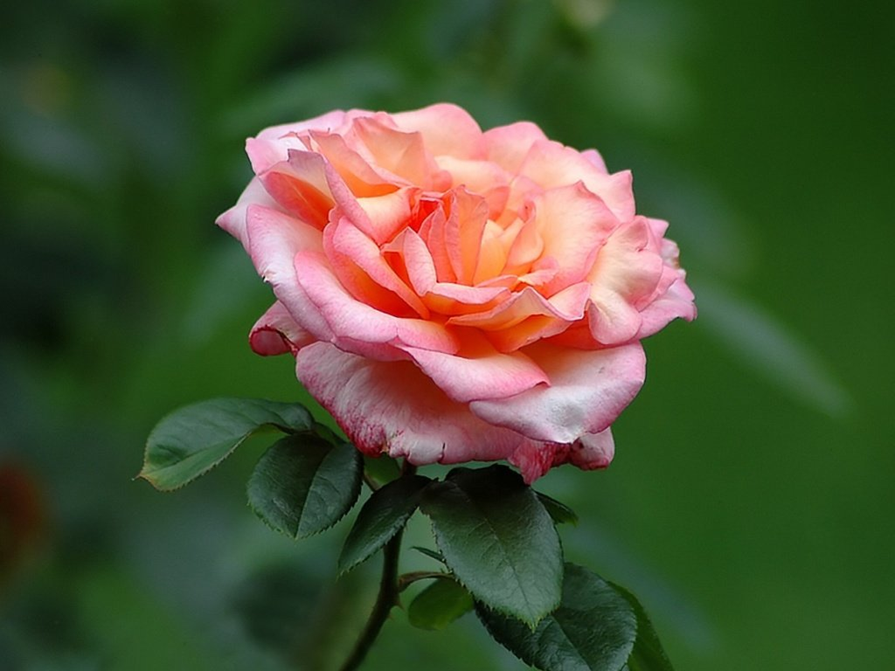
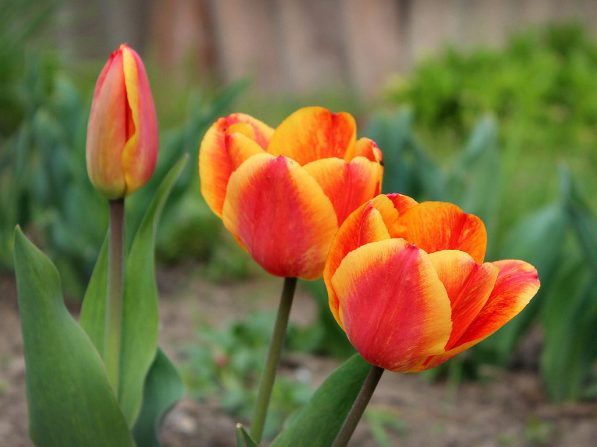
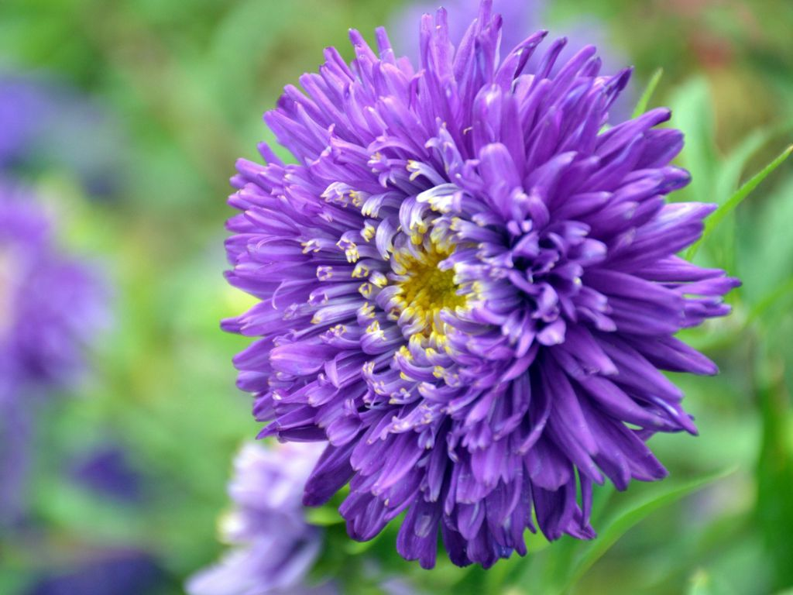
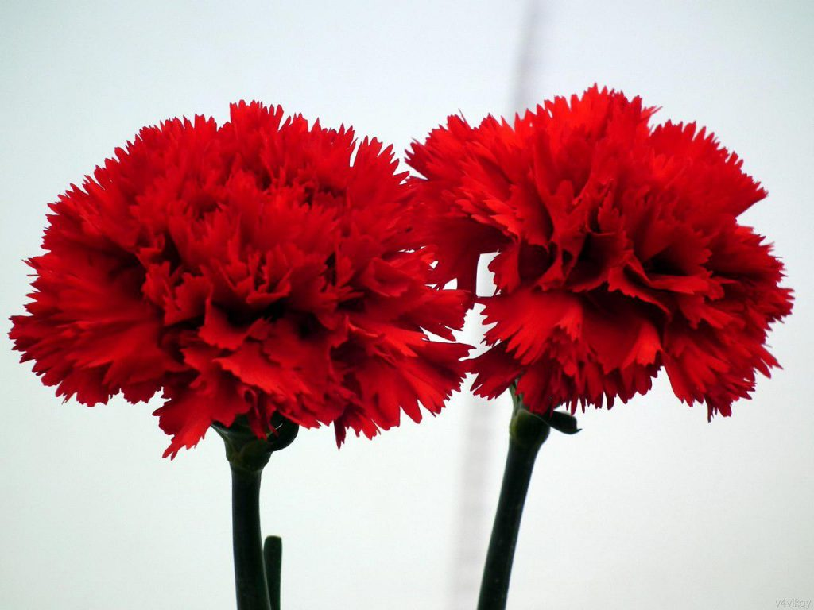
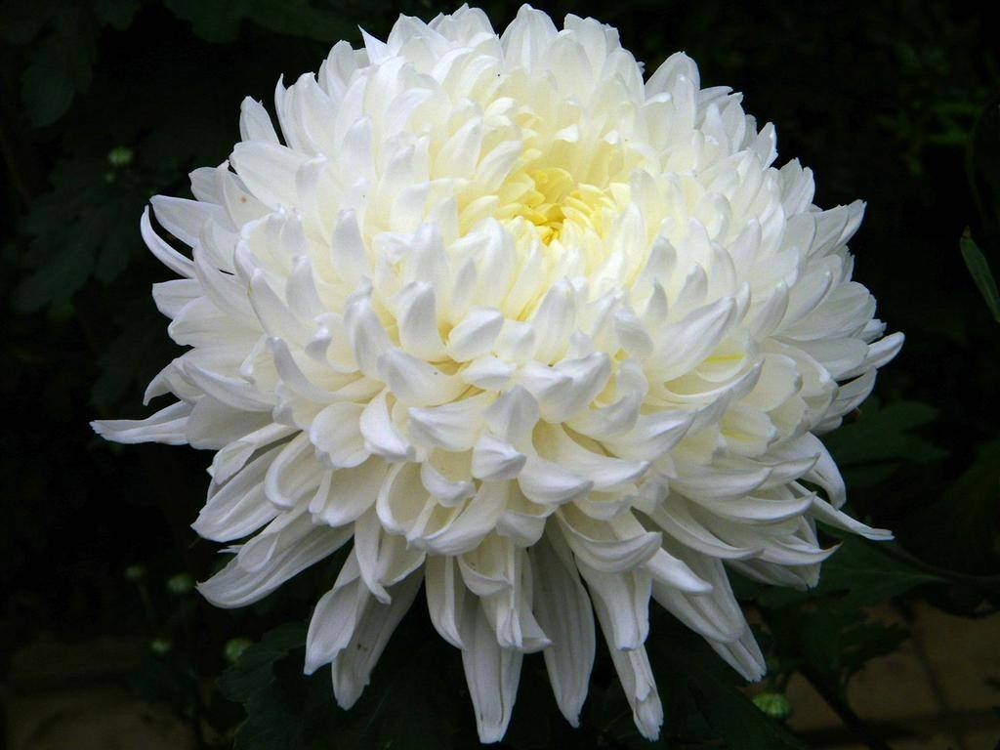
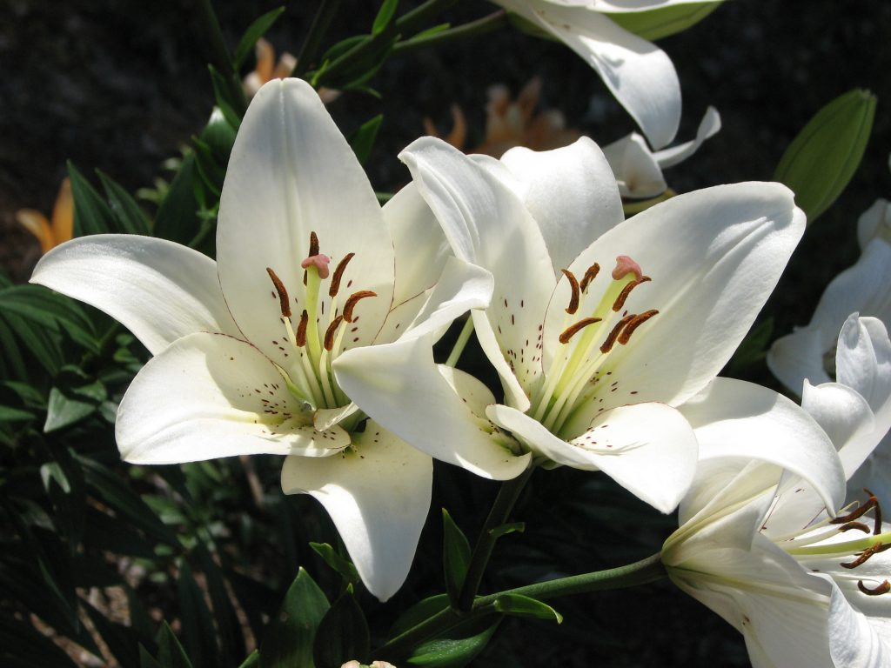
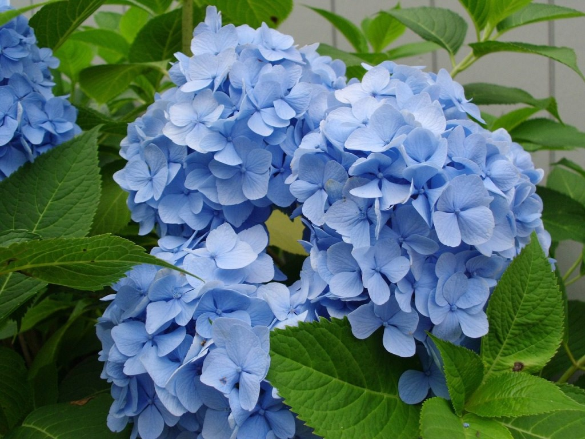
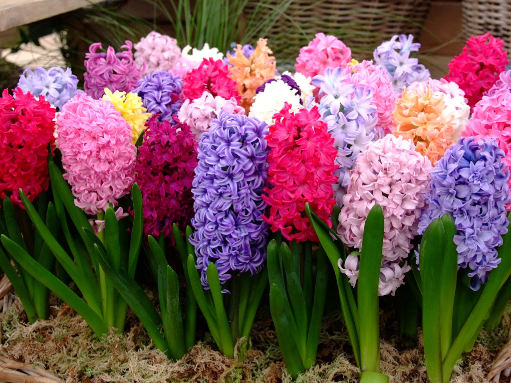
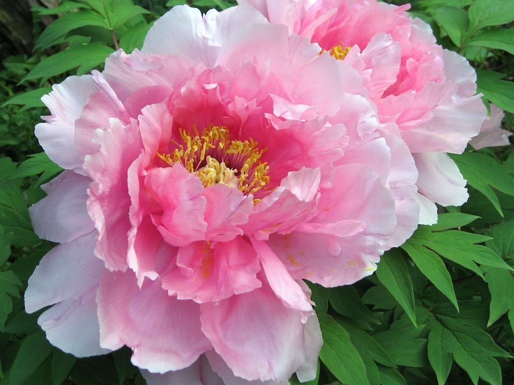

Роза Тюльпан
Астра Гвоздика
Хризантема Лилия
Гортензия Гиацинт
Пион
Цветы

Роза — собирательное название видов и сортов
представителей рода Шиповник (лат. Rósa), выращиваемых человеком.
Большая часть сортов роз получена в результате длительной селекции
путём многократных повторных скрещиваний и отбора. Некоторые сорта
являются формами дикорастущих видов.
Форма куста может быть от раскидистой до узкопирамидальной.
Высота куста групп чайно-гибридных и флорибунда от 30 до 90 см;
полиантовых — 30—45 см, некоторые сорта достигают 60 см;
миниатюрные — 25—35 см. Группа плетевидных роз представляет
собой кустарники с плетевидными, дугообразными стелющимися
побегами от 2,5 до 6 метров длиной.
У роз принято различать два типа многолетних ветвей — основные или
маточные, ветви и ветви с законченным ростом и пять типов однолетних
побегов — ростовые, преждевременные, жировые, генеративные и
силлептические.
Длина цветоноса у садовых роз колеблется от 10 до 80 см. Цветки роз
удивляют своим многообразием. Их размеры колеблются от 1,8 см до
18 см, количество лепестков может составлять от 5 до 128,
существует до десятка различных форм цветка, цветки могут быть как
одиночные, так и в соцветиях от трёх до двухсот штук. Очень
разнообразна цветовая гамма: нет только чисто-синих. Получен сорт
зелёной розы, но он представляет интерес лишь для ботаников. Кроме
однотонных существуют сорта роз с сочетанием окрасок, а также
меняющие цвет в процессе цветения. Разнообразны ароматы различных
видов и сортов роз. Кроме стандартного аромата дамасской розы,
существуют розы с ароматом от фруктового и цитрусового до аромата
благовоний и пряностей. Махровость многочисленных сортов культурных
роз возникла в результате превращения части тычинок в
лепестковидные стаминодии.

Тюльпан (лат. Túlipa) — род многолетних
травянистых луковичных
растений семейства Лилейные (Liliaceae), в современных
систематиках включающий более 80 видов. Центр происхождения и
наибольшего разнообразия видов тюльпанов — горы северного Ирана,
Памиро-Алай и Тянь-Шань. За 10—15 миллионов лет эволюции тюльпаны
расселились до Испании и Марокко на западе, до Забайкалья на
востоке и до Синайского полуострова на юге. На севере
интродуцированные человеком популяции тюльпана лесного достигли
Шотландии и южного побережья Скандинавии.
Все тюльпаны — типичные геофиты-эфемероиды, приспособившиеся к
жизни в горных, степных и пустынных местностях с жарким сухим
летом, холодной зимой и короткой тёплой и влажной весной. Развитие
тюльпана от семени до цветущего растения занимает от трёх до семи
лет. Смена поколений луковиц, в отличие от нарциссов, происходит
ежегодно. Во время недолгой весенней вегетации тюльпан
цветёт, плодоносит и закладывает под землёй молодые луковицы,
а отцветшая луковица умирает. В период летнего покоя, а у
некоторых видов и зимой, внутри луковицы, формируются зачатки
побега и цветка будущего года. Осенью луковица даёт корни и
завершает закладку плодоносящего побега.

Астра (лат. Aster) — род травянистых растений
семейства Астровые, или Сложноцветные (Asteraceae), включающий
более двухсот видов, широко распространенных в культуре как
декоративные растения с красивыми соцветиями-корзинками
разнообразной окраски.
Научное латинское название рода произошло от древнегреческого
слова ἀστήρ — «звезда».
Астры — однолетние и многолетние корневищные травы с
простыми листьями.
Cоцветия — корзинки, собранные в сложные комплексы в виде
щитка или метёлки; краевые цветки — язычковые, их окраска
очень разнообразна; центральные — мелкие, трубчатые, как
правило, жёлтого цвета.
Практически все виды, включаемые в род Aster в его современном
понимании, распространены в Евразии. Большинство американских
видов, ранее включаемых в этот род, сейчас относятся к другим
родам — Eucephalus, Symphyotrichum, Eurybia, Oreostemma,
Ionactis и др.

Гвоздика (лат. Diánthus) — род многолетних
растений семейства
Гвоздичные (Caryophyllaceae). Травянистое дикорастущее и садовое
растение с цветками разнообразной окраски. Многие виды и сорта
гвоздики выращиваются на срезку и являются декоративными садовыми
растениями. Регистрацией сортов гвоздики занимается Королевское
садоводческое общество.
Многолетние травы и полукустарнички с линейными или
линейно-ланцетовидными листьями.
Цветки одиночные или по 2—3 на концах веточек. Чашечка
цилиндрическая или цилиндрически-коническая, с многочисленными
продольными жилками и (1)2—4(5) парами чешуевидных, черепитчато
налегающих прицветников. Лепестков пять, с длинными ноготками и
зубчатым, бахромчато рассечённым, изредка цельным отгибом. Тычинок
десять. Столбиков два.
Плод — цилиндрическая коробочка, сидячая или на коротком карпофоре,
одногнёздная, раскрывающаяся четырьмя зубцами. Семена
многочисленные, уплощённые, овальные, чёрного цвета,
мелко-тупобугорчатые.
Большинство видов рода легко гибридизируют между собой.
Род известен всего более по красоте цветов, почему и распространен
в садоводстве. Особенно известны многочисленные формы, вариации и
помеси видов: D. Carthusianorum L. — Г. картгаузерская, D.
barbatus L. — Г. бородатая, D. Caryophyllus L. — Г. гвоздичная,
D. Japonicus Thnb. — Г. японская и др.
Гвоздики светолюбивы, засухоустойчивы, в большинстве зимостойки.

Хризантема (лат. Chrysánthemum, от др.-греч.
χρῡσανθής, «златоцветный», от χρυσός — «золотой» и ἄνθος —
«цветок»; объясняется жёлтой окраской соцветий) — род однолетних
и многолетних травянистых растений семейства Астровые, или
Сложноцветные (Asteraceae), близкий к родам Тысячелистник и
Пижма, куда нередко перемещаются многие виды хризантем.
Род включает 42 видов, произрастающих в умеренной и северной
зонах земного шара, преимущественно в Азии.
Распространённые в культуре сорта хризантем до недавнего времени
были отнесены к ботаническим видам дендрантема индийская, или
хризантема мелкоцветковая (Dendranthema indicum) и дендрантема
шелковицелистная, или хризантема крупноцветковая (Dendranthema
morifolium). Вопрос о происхождении гибридов до настоящего времени
остаётся далеко не решённым. Русский ботаник Н. Н. Цвелёв (1961)
предполагает, что предковым видом мелкоцветковых гибридных
хризантем является дендрантема, или хризантема индийская,
«скрещенная с другими белоцветковыми и розовоцветковыми видами».
В качестве декоративных растений открытого грунта в средней
полосе России наиболее часто используется хризантема корейская.

Лилия (лат. Lílium) — род растений семейства
Лилейные (Liliaceae). Многолетние травы, снабжённые луковицами,
состоящими из мясистых низовых листьев, расположенных черепитчато,
белого, розоватого или желтоватого цвета.
В садах выращиваются до 30 видов и множество сортов и культиваров.
Большинство из них удаётся возделывать на открытом воздухе в
средней Европе, а отчасти и в России. Некоторые же, способные
в средней Германии (например, в Саксонии) выдерживать зиму,
должны в России подвергаться на зиму тщательному прикрытию,
такова, например, японская лилия, Lilium lancifolium, которая и в
Германии требует нередко прикрытия на зиму. Эта лилия с
бело-розовыми ароматными цветами, испещрёнными карминовыми
пятнышками, лучше всего удаётся в России в горшках или ящиках.
То же можно сказать о золотистой лилии (Lilium auratum),
считающейся красивейшей из лилий. Обе из Японии и Кореи.
Ещё более чувствительна гигантская лилия (Lilium giganteum) из
Непала, стебли которой, покрытые широкими черешчатыми листьями,
бывают иногда в 3 м высоты, а ароматные, почти колокольчатые цветы
длиной от 16 до 18 см, белого с зелёным отливом снаружи,
фиолетового внутри. Луковицы её бывают величиной почти с
человеческую голову.
Обыкновенная белая лилия тоже требует зимнего покрова. Вполне
выдерживают российскую зиму вышеназванные сибирские, а также
тигровая (Lilium tigrinum), Lilium bulbiferum и пр., но не
кавказские лилии, которые довольно нежны.

Гортензия (лат. Hydrángea) — род цветковых
растений семейства Гортензиевые, завезены в Европу в начале XIV
века для зажиточных слоев, в основном Англии и Франции.
Изначально насчитывалось 2 вида: белые и алые.
Большинство видов являются кустарниками 1—3 м высотой, некоторые
виды — небольшие деревья, остальные — лианы, забирающиеся по
стволам других деревьев на высоту до 30 м. Растения могут быть
как листопадными, так и вечнозелёными, однако широко культивируемые
виды умеренного пояса относятся к листопадным.
Цветут гортензии с весны до поздней осени. Цветки собраны на конце
стебля в красивые шарообразные соцветия — щиток или метёлку. У
большинства видов цветочные головки содержат два типа цветков:
мелкие плодущие (фертильные) цветки в середине и крупные бесплодные
(стерильные) цветки по краям. У некоторых видов все цветки плодущие
и имеют один и тот же размер.
В подавляющем большинстве цветки белые, однако у некоторых, таких
как гортензия крупнолистная (Hydrangea macrophylla), они могут быть
синими, красными, розовыми и сиреневыми. У таких видов цвет часто
зависит от уровня pH (водородного показателя) в почве: в кислых
почвах лепестки приобретают синюю окраску, в нейтральных —
бледно-бежевую, а в щелочных — розовую или сиреневую.
Гортензии — одни из немногих растений, способных накапливать
в себе алюминий, который выделяется из кислых почв и у некоторых
видов образует соединения, дающие им синие оттенки.
Плод гортензии — 2—5-раздельная коробочка с многочисленными
мелкими семенами.

Гиацинт (лат. Hyacínthus) — род растений семейства
Спаржевые (Asparagaceae). Ранее выделялся в собственное семейство
Гиацинтовые (Hyacinthaceae) или включался в семейство Лилейные
(Liliaceae).
Луковичные многолетние травы.
Луковица плотная, состоящая из мясистых низовых листьев,
занимающих своими основаниями всю окружность донца луковицы.
Цветущий стебель является непосредственным продолжением донца,
которое есть не что иное, как нижняя, сильно укороченная и толстая
часть стебля. После отцветания зелёный цветоносный стебель вместе с
зелёными листьями, сидящими при нём в самом низу, отсыхает, но в
углу самого верхнего из зелёных листьев образуется на стебле,
внутри луковицы, почка, которая мало-помалу разрастается и
превращается в молодую луковицу, зацветающую на следующий год.
В этой молодой луковице осенью уже заложен, разумеется в самом
сжатом виде, стебель с цветками будущего года. Кроме этой молодой
луковицы, в углах зелёных остальных листьев нередко образуются
другие более слабые дочерние луковицы, так называемые детки,
которые можно отделять. Через несколько лет они могут цвести.
Цветки собраны на верхушке стебля в виде кисти. Околоцветник их,
в виде колокольчатой воронки, ярко окрашен и с отогнутыми лопастями.
Плод в виде кожистой коробочки с тремя гнёздами, содержащими
по два семени с хрупкой кожурой.

Пион (лат. Paeónia) — род травянистых
многолетников и листопадных
кустарников (древовидные пионы). Единственный род семейства
Пионовые (Paeoniaceae), ранее род относили к семейству лютиковых
(Ranunculaceae).
Виды семейства произрастают в субтропиках и умеренных районах
Евразии и Северной Америки.
Пионы предпочитают хорошо освещённые и прогреваемые солнцем
участки, хотя могут перенести и небольшое затенение в середине дня.
Лучший срок посадки пионов — август—сентябрь.
Пионы размножают делением кустов, но если нужно получить много
растений понравившегося сорта, то можно размножить отводками,
стеблевыми и корневыми черенками. Самый надёжный способ —
размножение почками с кусочками корневища. В каждой части
корневища должно быть не менее 2—3 почек.
Наверх↑